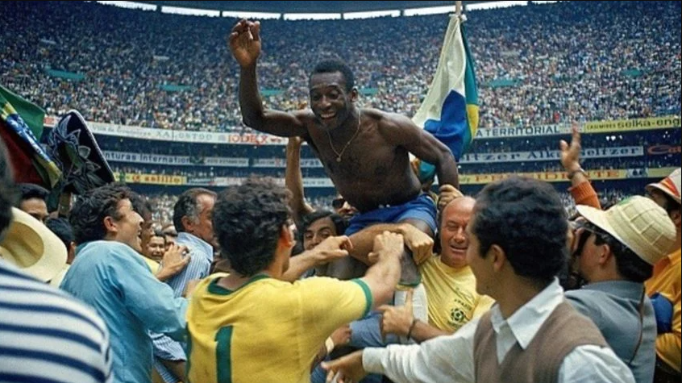

29 de Junho de 1958
O legado de Pelé: A trajetória brilhante do ícone do futebol
brasileiro

Edson Arantes do Nascimento, mais conhecido como Pelé, iniciou sua
carreira no futebol em 1956, aos 15 anos, pelo Santos Futebol Clube.
Se destacou rapidamente por sua habilidade e talento, se tornando
ídolo do time e do futebol brasileiro. Conquistou três Copas do Mundo
pela seleção brasileira (1958, 1962 e 1970) e marcou mais de 1.000
gols na carreira. Pelé se aposentou do futebol profissional em 1977,
aos 36 anos.